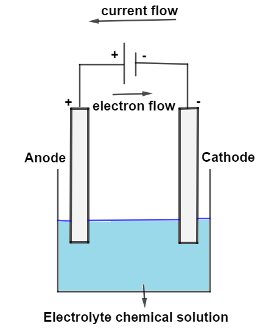

Corrosion is defined as the deterioration of metals due to a reaction with their environment. At its core, all metal corrosion is electrochemical in nature, meaning it relies on a pair of reactions where electron transfer occurs.
The site where metal breaks down and releases electrons is called the anode. This is an oxidation reaction: M → Mn+ + ne-. For example, Iron rusts via the reaction Fe → Fe2+ + 2e-.
The site that receives these electrons is the cathode. This is a reduction reaction. The two most common reduction reactions in corrosion are:
2H+ + 2e- → H2 (Common when metals corrode in acid).O2 + 2H2O + 4e- → 4OH- (Common when metals like iron rust in the atmosphere).
Whether a metal becomes an anode (corrodes) or a cathode depends on its Standard Electrode Potential (E0). An electrode with a more negative potential will always become the anode.
When two electrodes are electrically connected, they form a cell. The overall cell potential indicates the rate of corrosion and is calculated as: ΔE0 = E0Cathode - E0Anode. For a corrosion reaction to occur spontaneously, ΔE0 must be positive.